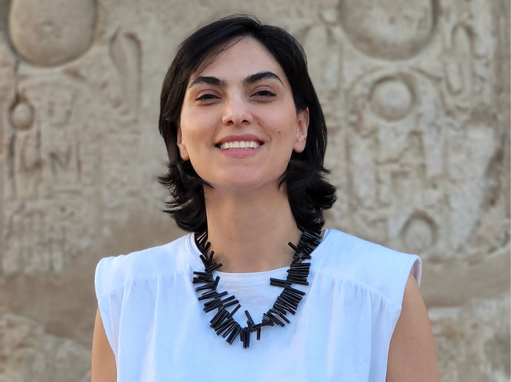

About

My name is Atefeh Fereidounpour.
In my last position, I was a design manager at Gated. With more than a
decade of design experience, I understand problems holistically, allowing
me to lead a team to provide the best solutions.
As a person who values empathy most, I choose to design the user’s
experience in order to help those businesses whose services and
products provide answers to people's needs. My multi-dimensional background
in advertising and graphic design coupled with my knowledge in technology and
psychology helps me to observe matters from a holistic viewpoint and deliver
unique perspectives in solving problems and providing users creative
experiences.
Education
MA - Web Design and New Media
Academy of Art University - San Frencisco, CA

Recognitions
Packaging of the world
Awwwards Nomination
Awwwards Nomination
CSS Nectar Site of the day
IMA Best in class
CSS Winner Starred
CSS Design Special Cudos
Addy Awards Silver
Addy Awards Silver
Addy Awards Bronze
Summit International Awards
Work Experience
Design Manager/User Experience - Gated / 2022
Gated challenges unknown senders to donate to charity in order to
reach you - so everything in the inbox is worth attention.
Allocated design resources to parts that needed improving by mapping out the user
flow.
Served as lead designer for changing the UX of key touchpoints including
onboarding and user acquisition. As a result, website conversions increased to 98%,
account activation rates doubled, and churn decreased from 68% to 40%.
Head of User Experience - Front / 2020 - 2022
Front Financial is an app for individual investors to connect their
brokerage accounts, get portfolio analyses, and interact with other
investors in the community.
Led a team of 4 designers and collaborated with the devs, marketing, support, and
compliance to define problems, propose solutions, and set goals for the product.
Managed the design team to redesign the UX and visuals of the app
to meet the needs of the targeted users and received 95% positive
feedback from 100+ users in user testing sessions.
Evaluated the user analytics with user testing sessions and collaborated with the
product manager and the CEO to come up with a design solution which
resulted in 76% weekly retention (our target was 40%), 3x time spent
in the app, and 32% increase in brokerage connection attempts.
Mentored one junior UX designer and one UX intern and helped them
develop their knowledge to become UX researcher in the company.
Product Designer - BlueTape / 2020 - 2021
BlueTape is a payment solution for contractors and material suppliers.
Worked closely with the CEO, PM, marketing team, finance lead,
and engineering lead in brainstorming and ideation sessions to shape the functionality of the app.
Defined user journeys based on tangible scenarios, created
wireframes for different platforms, designed high-fidelity prototypes,
and tested and iterated to achieve the most user-friendly design.
User Experience Design Specialist - Raiizz / 2020
Raiizz is an online fundraising marketplace supporting schools and nonprofits.
Led two design teams to improve UX flow for Raiiz’s website and application.
Defined scenarios, user journeys, personas, task flows, and wireframes.
UX/UI Designer - Counsyl / 2017 - 2018
Designed a detailed patient journey map, created component library and
atomic components to reach a unified digital design system.
Ideated and created research-based wireframes for online providers portal.
Designed UX/UI of a cross-functional lookup tool for the sales team/patients.
UX/UI Designer / Art Director - Nika Digital Agency / 2015 - 2017
Improved the company's positioning by creating sleek digital designs
which resulted in design recognitions and 800% business growth.
Graphic/Visual Designer - Organic Spices Inc. / 2014 - 2015
Art Director - Esparak Advertising Agency / 2008 - 2013